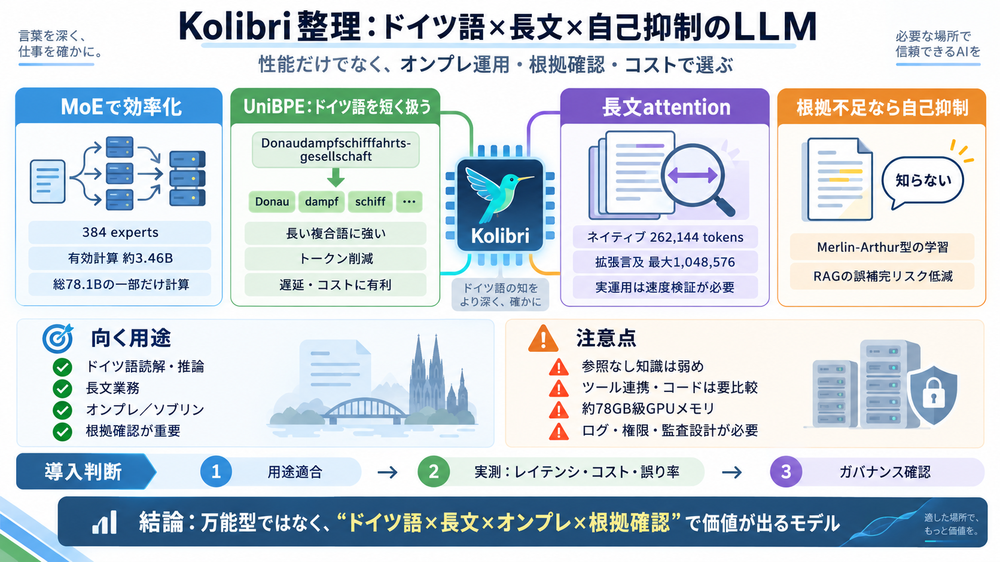

Aleph Alpha Kolibri: How the Sovereign German LLM Works
Kolibri needs about 78 GB of GPU memory for its weights, so the minimum is 2 NVIDIA A100 or H100 GPUs with 80 GB each, o…

Kolibriは、ドイツ語の読解・推論・長文文脈保持に最適化し、根拠が弱い場面では「知らない」へ寄せるための設計思想を含むオープンウェイトLLMです。さらに自社サーバで運用（ソブリン）する前提が、選定に直結します。
LLMは文章の次トークン予測で動きますが、実運用ではMoE・トークナイザ・attention・推論設計・幻覚低減が品質とコストを左右します。特に「データを外に出さない」や「運用コスト/エネルギー配慮」がモデル選定の中心になります。
外部秘匿 / 監査 / 運用コントロール（ソブリン）
MoE効率 / 長文attention / トークン化 / 推論訓練
Kolibriの中核はMixture of Experts（MoE）で、巨大な総パラメータを持ちつつ、各トークンで参照する“専門家”を絞って計算を軽くします。これにより、総計の重さよりも実行時の負荷を抑える狙いがあります。
384 experts
有効計算 約3.46B（総78.1Bの約4.4%）
ドイツ語は複合語が長くなりがちで、英語中心のトークナイザだと細分化されやすくなります。KolibriはUniBPEによりトークン数を抑え、同じ文量でも長文コンテキストをより実効的に使える狙いです。
トークン数の削減
遅延・コストにも間接的に有利
長文対応は計算が重くなりがちですが、Kolibriはsliding-window attentionの設計で一部の層だけ全体注意を行う構成とされています。40/50層が512トークン手前までを“滑り窓”として扱い、長文業務での運用適性を狙います。
sliding-window attention
512トークン手前＋必要層で全体注意
推論はドイツ語プロンプトで、ドイツ語のまま推論するよう訓練されているとされています。数学系ベンチマークでは同規模帯MoEで高得点を示すと主張されます。
ドイツ語→ドイツ語推論
数学系ベンチで高得点（同規模MoE）
Merlin-Arthurプロトコルにより、根拠が不足する場合に“知らない”と述べる能力（自己抑制）を学習したとされています。RAG（検索拡張生成）で“それっぽい誤り”を混ぜるリスクを下げる方向に働く、という論理です。
根拠不足 → “知らない”
RAGの誤補完リスク低減
Kolibriはクローズドブック（参照なし）では知識想起が弱くなりやすく、マルチターンのツール呼び出しやコーディングエージェントでは他モデルに上回られる場面があるとされます。
ドイツ語・長文・オンプレ運用＋根拠確認
参照なしの知識量／高度なツール連携／コーディング
ソブリン（sovereign）は、モデル自体を含めて組織が自社で運用できる自由度を指し、知財・改変・停止などのリスクを抑える考え方として説明されます。
自社サーバ内で展開可能
データを外に出さない運用
監査・アクセス制御の設計対象になる
重み運用には約78GB級のGPUメモリが必要とされ、最低構成としてA100/H100 80GB×2枚、またはH200/B200/B300を1台といった説明が見られます。つまり、ノートPCで試す用途には不向きです。
約78GB級GPUメモリ
A100/H100 80GB×2、またはH200/B200/B300 1台
Kolibriはネイティブ262,144トークンと、評価上の最大1,048,576トークン拡張が言及されていますが、実運用ではレイテンシと推論コスト、サーバ設定の影響が大きい点に注意が必要です。
262,144トークン
最大1,048,576トークン
Kolibriは「ドイツ語・長文・オンプレ・根拠確認」を同時に満たしたい場合に有力ですが、用途適合（参照なし知識／ツール連携／コーディング）と、第三者検証・運用監査をセットで確認するのが安全です。
参照なし／マルチターン／コード要件
レイテンシ／コスト／誤り率
ログ・権限・監査・責任分界
Kolibriは、ドイツ語最適化（UniBPE）・MoE効率・長文attention・“知らない”自己抑制を、ソブリン運用前提として結びつけたオープンウェイトLLMです。一方でGPU要件が重く、参照なし知識やツール/コーディングでは弱くなり得るため、導入は用途と運用検証を先に固めるべきです。
ドイツ語×長文×根拠確認×オンプレ
クローズドブック弱め／重いメモリ／検証範囲の限界
Kolibri needs about 78 GB of GPU memory for its weights, so the minimum is 2 NVIDIA A100 or H100 GPUs with 80 GB each, o…
Kolibri is an open-weight mixture-of-experts model with 78B total parameters but only about 3.46B active per token, supp…
memory. For a 70B parameter model running at FP8, the weights consume roughly 70GB. On an H200, this leaves about 71GB f…
In its own benchmarks, Aleph Alpha compares Kolibri with three open-weight models: Alibaba’s Qwen3.6-35B-A3B, Nvidia’s N…
FP4 is particularly impactful for LLM inference. A model that needs 80GB in FP8 on H100 would need only ~40GB in FP4 on …